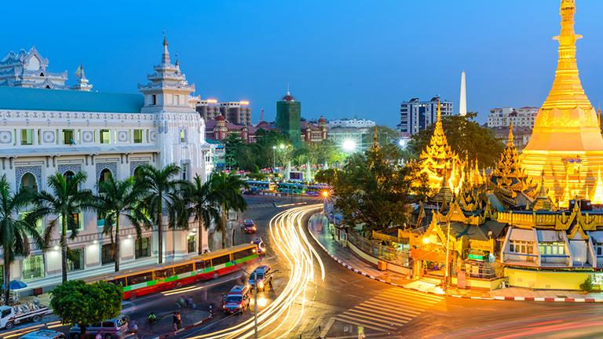

SHWEDAGON PAGODA IN YANGON OR THE ENCHANTING OF THE SENSES
By Patricia
Traveller in Myanmar, fascinated by Myanmar
My travels in Myanmar: A privileged witness of the transformation
From the first time I visited Myanmar in 2013, I am attracted to this unique and fascinating Southeast Asian country. In December 2020, due to the pandemic, I did not spend Christmas holidays in Myanmar, as I used to do in the last years. This circumstance made me miss even more my trips in Myanmar. This fact, along with an idea running in my head for long time, propels me to start writing a few short articles about Myanmar.
During these years, I visited the country widely, including Yangon region, Shan State, Mandalay region, Bago region, Kayin state, Naypyidaw Union Territory, Magway region, Mon state and Sagaing region. Choosing a place or topic to start writing is not easy, so many lovely memories come to my mind.
Shwedagon Pagoda in Yangon: an indelible impression on my senses
Always my entry point to the country is Yangon and always a must-visit in every trip is Shwedagon Paya (pagoda), located west of the Kandawgyi Lake in the city Yangon. So I think it is a good topic to start with.
The history of the origin of the Shwedagon pagoda can be read in the so-called Chronicles of the Great Crystal Palace (Hmannan Mahayazawin-daw-gyi), the best known Burmese royal chronicle of the Konbaung dynasty. With over 2,500 years old, it is the most important pagoda in Myanmar and a display of Myanmar cultural heritage in terms of architecture, art and sculpture.
It stands out not only for the complexity of its design geometry but also for the overwhelming presence of architectural elements and the omnipresent gold color. It is one thing to visit the Shwedagon pagoda one afternoon and be amazed at what your eyes see and another thing is try to understand, even a little, the reason for this design and architecture and elements of the many temples, pagodas and sculptures of Shwedagon pagoda.
Access to the Shwedagon pagoda can be done through 4 entrances oriented to the four cardinal points, following the Buddhist tradition. The fee is 10,000 kyats. The pagoda, with an octagonal-shaped terrace base (paccaya), stands over 100 meters high, and sits on the Singuttara Hill in Yangon. It is surrounded by 64 pagodas and there is a small pagoda in each of the 4 cardinal points too.
At the top of the stupa, there is the umbrella or hti, with numerous precious stones (diamonds, sapphires, rubies). Under the umbrella there are numerous small golden bells that ring in the wind and create a magic sound. The stupa is crowned by a large diamond.
I have visited Shwedagon pagoda more than a dozen times, arriving at the site on foot and by taxi, early in the morning and at sunset, using the elevator and walking up the stairs surrounded by sellers of flowers, incense and Buddha’s images, to reach the main central terrace, walking around the pagoda in a clockwise direction, as mandated by Buddhist tradition, or quietly sitting observing life around. For me, the best time is when it gets dark, around half past six in the afternoon, and a fascinating atmosphere is generated, full of tranquility, with the illuminated pagoda and a small wall that surrounds the central stupa full of lit candles and the smoking incense. The offerings of flowers in the pagodas that surround the great stupa contribute to create an even more special atmosphere, with the special smell of jasmine.
The great bells in Shwedagon Pagoda: learning Myanmar history
In Shwedagon Pagoda there are two large bells: King Singu’s Bell and King Tharrawaddy’s Bell. A few centuries ago there was another great bell. We will talk about it later.

King Tharrawaddy’s Bell in Shwedagon Paya (Tharrawaddy Min Bell) brings me memories of my first trip to Myanmar and the first visit to Shwedagon Paya in 2013. King Tharrawaddy (1787 – 1846) – eighth king of the Konbaung dynasty – donated this bell of 42 tons to Shwedagon Pagoda in 1841.I visited the pagoda in the afternoon and soon our tour leader returned us to the hotel as it was raining. It was the last day of my trip to Myanmar and next day, the return to Spain. Back in the hotel, from my hotel window (Park View Hotel, Yangon), I was looking the pagoda at sunset, thinking I should not have returned to the hotel and stay more time there. As the entrance ticket allowed the visit to the pagoda throughout the day, I did not hesitate and asked my father if he wanted to join me. We returned to Shwedagon Pagoda, where there were just few locals (it was around 19:30 on a rainy afternoon) and we were able to enjoy a very quiet visit.
Years later, on a Prome (Pyay) road trip from Yangon – Prome is located 8 kms from Sri Ksetra or Thaye Khittaya, one of the ancient Pyu cities in Myanmar. Sri Ksetra is must visit for travellers interested in archaeology! – I passed through the city of Tharrawaddy, north of Yangon, in the Bago region.
The Great Bell of Dhammazedi, centuries ago located in Shwedagon Pagoda: In search of another great bell
In the 15th century, the Shwedagon Pagoda also housed the famous Great Bell of Dhammazedi, donated by King Dhammazedi, who ruled the kingdom of Hanthawaddy between 1471 and 1492.
At the end of the 16th century, European explorers and merchants began to visit Lower Burma, particularly in the area of Syriam (now called Thanlyin) and Pegu (now known as Bago). In 1608, the adventurer, mercenary and warlord of Portuguese origin named Filipe de Brito e Nicote (or Nga Zinga, as he is known in Myanmar- also governor of Syriam from 1602 to 1613- took the great bell of Shwedagon pagoda in Dagon (now Yangon) and with the help of elephants, carried it towards the Bago River. The objective was to move the Dhammazedi bell to Syriam, across the river, to melt it and turn it into war cannons. The great weight of the load in the ship caused it to sink at the confluence of the Bago and Yangon rivers. To this day, this great bell could not be located and rescued from the bottom of the river, despite the underwater archaeology initiatives taken.
If you visit Thanlyn, it is interesting to pay a visit to the quiet ruins of an old Catholic church. It is sometimes known as the Portuguese church because it is located in an old Portuguese settlement and because a wooden church built by the Portuguese previously existed there. But the old church that you can see now was truly built by an Italian missionary priest named Paolo Nerini in 1750. A special place between trees, little visited, that guards an ancient tomb.